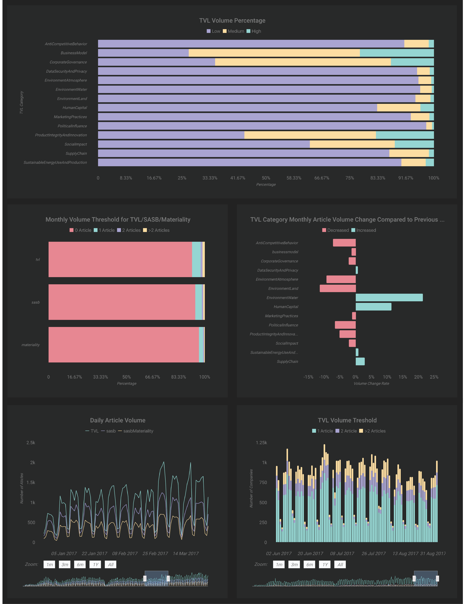

TVL Data Quality Dashboard
09.2017 / San Francisco

TThis data dashboard is an internal tool I build for TruValue Lab to monitor the quality of their self-generated and AI-powered financial data through data visualizations.
It helps data analysts and scientists at TruValue Lab test the performance of their data ingestion system; track data quality internally and identify areas for improvement at a high level; It also provides a generalized overview of key performance indicators to the leadership and product managers regarding the overall data quality promptly.
To leverage the overall quality of TVL’s self-generated data, the data content team have to test the data at each stage throughout the NLP pipeline. The phase I of this Data Quality Dashboard use the data from the data ingestion stage for visualization. The dashboard is designed to be updated at a monthly frequency.
1.draft product proposal
The kick-off of this project started with a product proposal. I evaluated options that are viable to us and presented to Product and Design Lead and the Engineering Team. We decided to adopt a third party dashboarding tool instead of acquiring extra input from the engineering team given the priority of our needs and expenses.
2.understand the task domain
I worked closely with the data analysts and data scientists to better understand the task domain for this set of data visualizations. The goal is to ensure that we are on the same page regarding the nature of the data and the insights could reveal from each visual components from the dashboard.(want to compare, ranging from the universe and throughout times.)
3.parsing the data
The understanding of the task domain went parallel with the process to playing with the complex data pulled from the internal data API. Given the capacities of the dashboarding tool, I optimized the data structure and format to facilitate performance of the tool better.
4.UI/UX design
With more than 60 diagrams on hand that has been visualized through the dashboarding tool, I grouped them into four different categories based on the type of insights they generated and displayed them on separate pages that the users can toggle between. Besides, a monthly data quality overview page was shown on the landing page which compares some of the KPIs of this month with the previous one.Visual tweaks for colors and overall layout were made to keep the data dashboard visually consistent with other TVL products.
5.QA
I worked closely with data scientist to QA the node.js and python scripts I wrote for parsing the data. We also tested the quality of pulls from data API to ensure that the data source is working correctly.
_development tools:
python, node.js